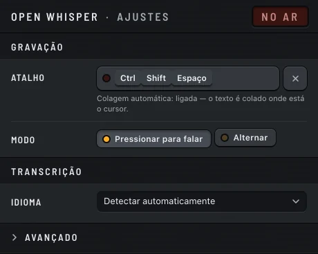

O Open Whisper pode ser usado inteiro pelo teclado. Estas são todas as teclas que ele usa, em cada plataforma. Só duas funcionam a partir de qualquer app: o atalho de ditado e, enquanto você grava, o Esc.
O atalho de ditado
| Mac | Windows | |
|---|---|---|
| Padrão | ⇧⌘Espaço | CtrlShiftEspaço |
| Usado no lugar quando a sua escolha é reservada pelo sistema | ⇧⌘D | CtrlShiftD |
| Pressionar para falar | Segure as teclas, fale, solte | Segure as teclas, fale, solte |
| Alternar | Aperte para começar, aperte de novo para parar | Aperte para começar, aperte de novo para parar |
O atalho funciona sem nenhum app em foco e não precisa de permissão. Troque na configuração inicial ou nos Ajustes. A tecla mostrada ao lado de Iniciar Gravação no menu é sempre a que está valendo de verdade.
Cancelar uma gravação
O Esc só é capturado enquanto o Open Whisper está gravando. No resto do tempo, ele chega aos seus apps sem interferência. Quando a gravação passa a Transcrevendo, o Esc não cancela mais.
| Modo | Mac | Windows |
|---|---|---|
| Alternar | Esc | Esc |
| Pressionar para falar | Esc, ou as teclas que você segura mais Esc, como ⇧⌘Esc | As teclas que você segura mais Esc, como CtrlAltEsc para CtrlAltEspaço |
Windows
Com o padrão CtrlShiftEspaço no modo Pressionar para falar, o Esc não cancela: CtrlShiftEsc é o Gerenciador de Tarefas. O mesmo vale para um atalho feito só de Ctrl ou só de Alt mais uma tecla (CtrlEsc abre o Iniciar, AltEsc alterna janelas). Solte as teclas, use o modo Alternar, ou escolha um atalho como CtrlAltEspaço.
Mac
Um atalho que segura ⌥ e ⌘ juntos não cancela com as teclas seguradas: ⌥⌘Esc é o Forçar Encerrar. Use o modo Alternar, ou um atalho sem esse par.
Combinações que não servem
O atalho precisa de um modificador: ⌘, ⌃ ou ⌥ no Mac, Ctrl ou Alt no Windows. Shift sozinho não conta. No Windows, a tecla Windows não pode fazer parte dele.
Estas são do sistema. Se você escolher uma delas, os Ajustes avisam que é reservada e a alternativa acima passa a valer.
| Reservadas | |
|---|---|
| Mac | ⌘Espaço ⌃Espaço ⌃⌥Espaço ⌘Tab ⇧⌘3 ⇧⌘4 ⇧⌘5 ⌘Q ⌘W |
| Windows | CtrlAltDel CtrlShiftEsc CtrlEsc CtrlEspaço AltTab AltShiftTab AltF4 AltEspaço AltEsc |
Uma combinação que outro app já usa também não pode ser registrada: os Ajustes avisam, e você escolhe outra.
Nos Ajustes e na configuração inicial
| Tecla | O que faz |
|---|---|
| Tab | Passa de um controle para o outro |
| Espaço ou Enter no atalho | Começa a gravar um atalho novo; depois, aperte a combinação |
| Esc enquanto grava um atalho | Mantém o atalho anterior |
| Delete ou Backspace enquanto grava um atalho | Mantém o atalho anterior |
| Setas em Modo | Alterna entre Pressionar para falar e Alternar |
| ↑ e ↓ em Encerrar após silêncio | Soma ou tira meio segundo |
| Setas nas etapas da configuração inicial | Vai para a etapa anterior ou a seguinte |
As mudanças nos Ajustes valem na hora. Não existe botão de salvar.



Fechar uma janela
| Mac | Windows | |
|---|---|---|
| Fechar os Ajustes, a configuração inicial, o Sobre ou a janela de vídeo | Esc, ⌘. ou ⌘W | Esc ou CtrlW |
- Fechar a configuração inicial antes de Concluir faz ela voltar na próxima vez que o Open Whisper abrir.
- A janela de vídeo pergunta antes quando uma transcrição não foi copiada nem salva. A transcrição continua lá quando você reabre a janela.
Na janela de vídeo
| Tecla | O que faz |
|---|---|
| Enter em Link do vídeo | Começa a transcrição |
| Esc | Fecha a janela (pergunta antes se uma transcrição não foi aproveitada) |
No menu
O menu mostra estas teclas ao lado dos itens. Elas não são atalhos globais: a partir de outros apps, só o atalho de ditado e o Esc funcionam.
| Item | Mac | Windows |
|---|---|---|
| Iniciar Gravação / Parar Gravação | o seu atalho de ditado | o seu atalho de ditado |
| Copiar Última Transcrição | ⇧⌘C | CtrlShiftC |
| Ajustes… | ⌘, | Ctrl, |
| Sair do Open Whisper | ⌘Q | CtrlQ |